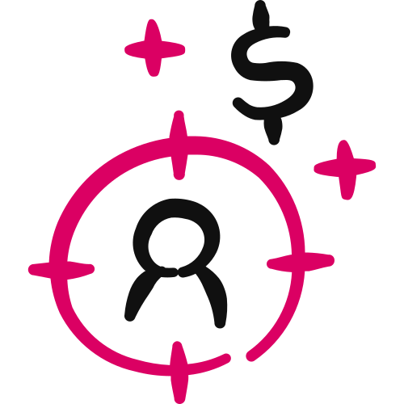

Part 1 · The System · Chapter 3
Immersion = Conversion

- The longer people spend with you, the easier the close and the shorter the sales cycle.
- There are three kinds of event: micro, single day and multi-day.
- Each one carries its own close. Pick your event first, and your close picks itself.
- The four phases are the same at every length. A longer event adds depth, never a new order.
01
Why it works
Think about the last time you spent three hours with someone who really knew their stuff, compared with a ten-minute chat. By the end of the three hours you knew how they think, you'd heard their stories, and you trusted them in a way a short conversation never gets to.
A virtual room works the same way. Time spent with you does the selling that a sales call would otherwise have to do afterwards. That's the law this chapter is named for:
Immersion = Conversion. The longer the immersion, the shorter the sales cycle.
A short event builds enough trust to earn a conversation. A long event builds enough trust for people to decide right there in the room. So the length of your event decides what you can reasonably ask the room to do at the end of it.
02
The framework: the Immersion Timeline
| Event | Length | Often run as | The close it carries |
|---|---|---|---|
| Micro | 60–90 minutes | A mini workshop | The ASK™ Close · they apply and book a call, and the sale happens on the call |
| Single day | 90–120 minutes | A masterclass | The JOIN™ Close · they join your membership straight from the room |
| Single day, longer | 180–240 minutes | A masterclass | The PASS™ Close · they book a Paid Audit or Strategy Session |
| Multi-day | 60–180 minutes a day | A challenge | The SEAL™ Close · the full offer, secured with a deposit |
Read it left to right and you can see the pattern. As the event gets longer, the close asks for more, because the room has had the time to get there.
What you call your event is your choice. The length is what matters.
The four phases don't change
A micro event and a three-day challenge run the same four phases in the same order. The difference is depth: more proof, more story, more of the dream shown. On a multi-day event the phases simply spread across the days.
03
Right and wrong
Wrong: the close doesn't fit the room. A micro event that ends by asking a room of strangers for a big commitment on the spot. They've only just met you. The pitch lands heavy and the chat goes quiet.
Right: the close matches the immersion. The same micro event ends by inviting the right people to apply for a call. It's a small, natural step for the trust you've built so far, and the people who take it are the ones worth talking to.
Right: a high-ticket close gets a longer event. If you want people to commit to a high-ticket offer from the room, give them the time to get there. The bigger the decision, the longer the event has to be.
Wrong: starting at the top. Planning a three-day challenge as your first event because that's where the biggest results are. You're now learning to present, to hold a room and to close, all at once, over three days.
Right: earning your way up. Start with the shorter event, run it until it works, then lengthen it. You earn your way to the longer formats. You don't start there.
04
The steps
- Pick the event you're running next. Not the one you'd love to run one day. The next one.
- Find its length on the Immersion Timeline. Be honest about how long you can hold a room today.
- Put your finger on the close that sits with it. That's your close. Part 5 shows you what it involves.
- Write it as one sentence: "My next event is a ______, and I'll close it with The ______ Close."
If you haven't got the timeline in front of you, answer one question: is your next event a short session, half a day, or a few days? That tells you your close.
05
Mistakes to avoid
- Choosing the close first. The event sets the close, not the other way around.
- Cramming a big close into a short event. The room hasn't had the time, so the pitch feels like pressure.
- Adding beats to fill a longer event. Longer means deeper, not different. Add proof and story to the same four phases.
- Cutting beats when you're running long. Cut depth instead: fewer proof points, a tighter story. The order stays whole.
06
Check your understanding
- What does a longer event change about the close? It lets you ask for more, because the room has had more time to trust you.
- Which comes first, the event or the close? The event. Its length points to the close.
- What changes in the four phases when the event gets longer? Only the depth. The phases and their order stay the same.
07
Your Action
Tick it off when it's done. Your tick stays in this browser, and the contents marks this chapter complete.
Coach Launch
Apply For Partnership Opportunity
Last updated 2026-11-25